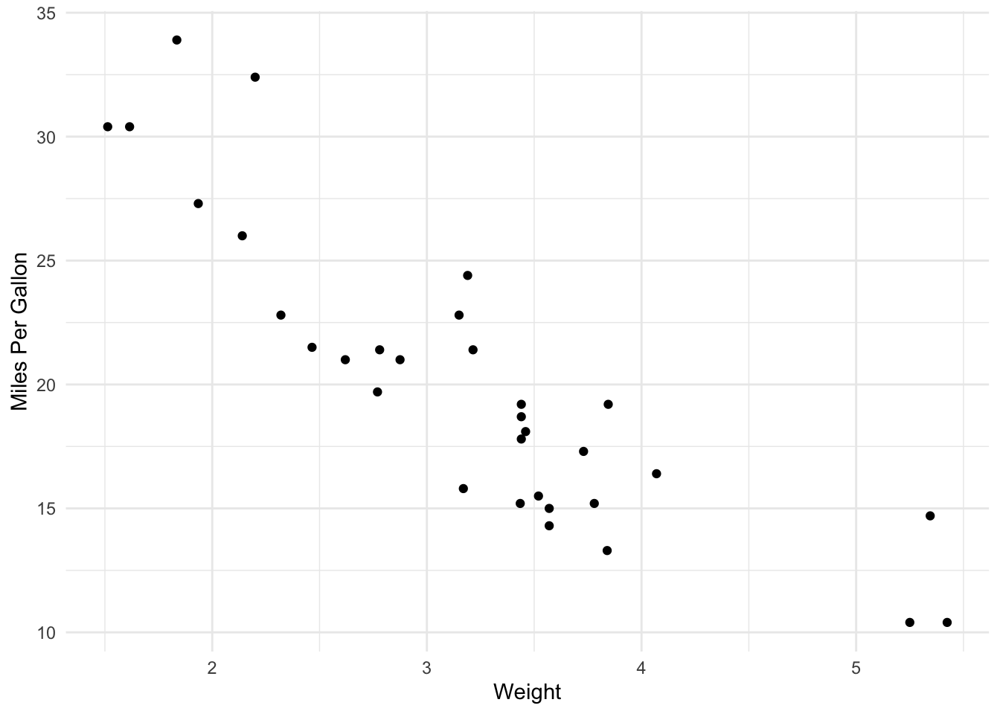

Code
2 + 2 + 2 [1] 6testing testing !2 + 2 + 2 [1] 6bold
italicize
both bold and italics
strikethrough
testing testing
```{r}
#| label: setup
#| message: false
#| warning: false
library(tidyverse)
library(knitr)
my_data <- mtcars
my_real_data <- read_csv("../data/taxonomic_data_2.csv")
#../ goes back one parent directory so you can access the data folder. Remember this RMD quarto document is sitting in the docs folder so we need to do the ../ to get back to our main directory.
head(my_real_data)
```# A tibble: 6 × 8
SPECIES_CD FAMILY SCINAME COMNAME LC LM WLEN_A WLEN_B
<chr> <chr> <chr> <chr> <dbl> <dbl> <dbl> <dbl>
1 ABL HIAN Belonidae Ablennes hians flat n… NA NA NA NA
2 ABU SAXA Pomacentridae Abudefduf saxati… sergea… NA NA 1.64e-5 3.14
3 ABU TAUR Pomacentridae Abudefduf taurus night … NA NA NA NA
4 ACA ASPE Chaenopsidae Acanthemblemaria… roughh… NA NA 8.40e-6 2.96
5 ACA CHAP Chaenopsidae Acanthemblemaria… papill… NA NA 8.40e-6 2.96
6 ACA MARI Chaenopsidae Acanthemblemaria… secret… NA NA 8.40e-6 2.96```{r}
#| label: fig-mpg
#| fig-cap: "Scatterplot of Car Weight vs. MPG"
ggplot(my_data, aes(x = wt, y = mpg)) +
geom_point() +
theme_minimal() +
labs(x = "Weight", y = "Miles Per Gallon")
```
Notice how we can also do this: as shown in Figure 1
```{r}
#| label: tbl-summary
#| fig-cap: "Average MPG by Cylinder Count"
my_data %>%
group_by(cyl) %>%
summarise(avg_mpg = mean(mpg)) %>%
kable()
```| cyl | avg_mpg |
|---|---|
| 4 | 26.66364 |
| 6 | 19.74286 |
| 8 | 15.10000 |
Average MPG by Cylinder Count
{.lightbox fig-align=“center” width = “50%”}
This is a really good paper (Cook et al. 2015).